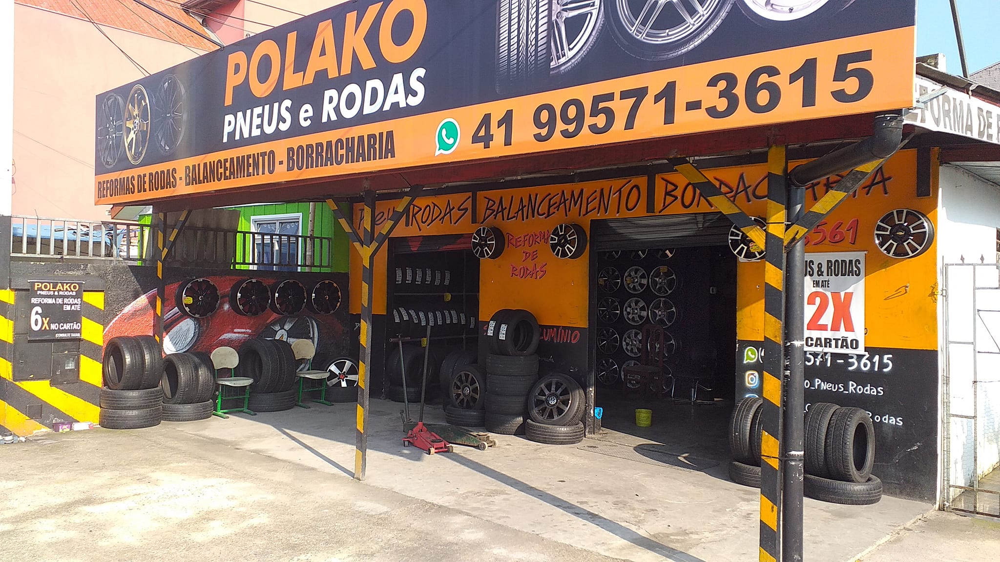
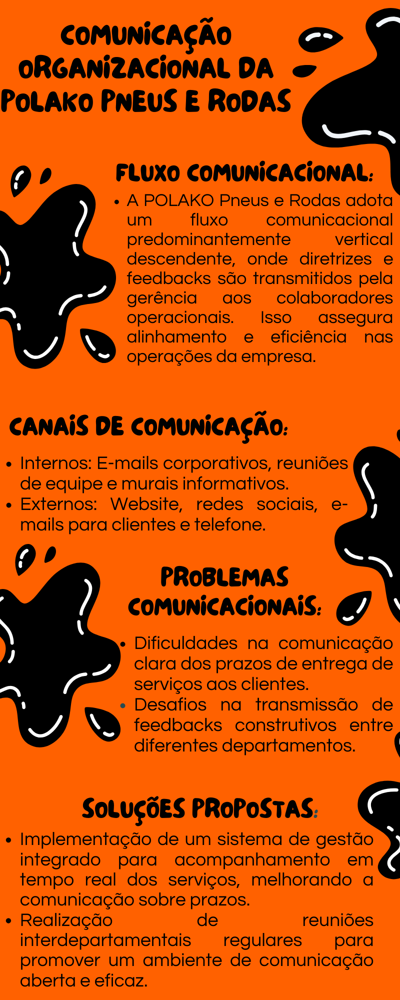

POLAKO Pneus & Rodas
Excelência em Serviços Automotivos


Excelência em Serviços Automotivos
Fundada em 2017 por Clésio Clayton de Oliveira, a POLAKO Pneus e Rodas iniciou suas atividades em uma pequena oficina no bairro do Sítio Cercado, Curitiba. Desde o início, destacou-se pela qualidade na reforma de rodas e venda de pneus novos, oferecendo serviços especializados com rapidez e eficiência.
Ao longo dos anos, a POLAKO consolidou sua posição no mercado como referência em serviços automotivos, graças ao compromisso com a qualidade, ética e transparência nas relações com clientes e fornecedores. Com uma missão clara de proporcionar segurança e satisfação aos clientes.
Em nosso portfólio de serviços, destacam-se:
1. Reforma de rodas por R$ 700,00 por unidade.
2. Pneus novos a partir de R$ 299,00, com diversas opções de marcas e modelos.
3. Rodas novas por R$ 1490,00 o jogo, disponíveis em variados estilos e tamanhos.
4. Balanceamento por apenas R$ 20,00 por roda, garantindo conforto e segurança aos nossos clientes.
Nossos diferenciais incluem:
- Compromisso com a qualidade.
- Entrega rápida e eficiente.
- Profissionais experientes que garantem um serviço de excelência em todas as etapas.
A POLAKO Pneus e Rodas valoriza uma comunicação empresarial eficaz para garantir alinhamento e eficiência em suas operações. Utilizamos um fluxo comunicacional vertical descendente para transmitir diretrizes e metas estratégicas aos nossos colaboradores, utilizando canais como e-mails corporativos e reuniões de equipe. Externamente, mantemos uma forte presença online através de nosso website, redes sociais e e-mails, fortalecendo nosso relacionamento com os clientes e nossa imagem de excelência no atendimento.
Reconhecemos desafios como a comunicação clara sobre prazos de entrega e feedbacks entre departamentos. Para superar esses obstáculos, investimos em sistemas de gestão integrados e realizamos reuniões interdepartamentais regulares, promovendo uma comunicação mais transparente e colaborativa. Assim, continuamos a aprimorar nossa comunicação empresarial, buscando sempre superar as expectativas de nossos clientes.
Em meio ao cenário automotivo competitivo de Curitiba, a POLAKO Pneus & Rodas tem se destacado como um bastião de qualidade e excelência desde sua fundação em 2017 por Clésio Clayton de Oliveira. Especializada inicialmente na reforma de rodas e venda de pneus, a empresa rapidamente se tornou uma referência na região do Sítio Cercado, graças ao compromisso inabalável com serviços de alta qualidade e atendimento excepcional.
Ao longo dos anos, a POLAKO não apenas expandiu suas operações, mas também diversificou seu portfólio de serviços, oferecendo uma ampla gama de opções que atendem tanto clientes individuais quanto empresas. De reformas personalizadas de rodas a vendas de pneus de marcas renomadas, a empresa se destaca não apenas pela qualidade de seus produtos, mas também pela velocidade e eficiência com que realiza cada serviço.
O segredo do sucesso da POLAKO reside não apenas em sua habilidade técnica e produtos de alta qualidade, mas também em seu compromisso inabalável com a satisfação do cliente. Através de uma comunicação empresarial transparente e uma presença online robusta, a POLAKO estabeleceu um canal direto e eficaz para seus clientes, garantindo que cada necessidade seja atendida de maneira personalizada e profissional.
Além disso, a empresa tem se destacado pela sua responsabilidade social e ambiental, implementando práticas sustentáveis em suas operações diárias. Desde o uso eficiente de recursos até a participação ativa em iniciativas comunitárias, a POLAKO demonstra seu compromisso em ser não apenas uma empresa de sucesso comercial, mas também um membro valoroso da comunidade. À medida que a POLAKO Pneus & Rodas continua a expandir sua influência no mercado automotivo de Curitiba, seu compromisso inabalável com a qualidade, ética e inovação continuará a moldar não apenas o futuro da empresa, mas também a experiência de seus clientes.
Para mais informações ou para agendar um serviço, entre em contato conosco pelos seguintes canais:
Telefone: (41) 99571-3615
Instagram: @polako_pneus_rodas
Facebook: Polako Rodas
Estamos à disposição para atender suas necessidades automotivas com qualidade e comprometimento.
Segunda-feira |08:00–18:30
Terça-feira |08:00–18:30
Quarta-feira |08:00–18:30
Quinta-feira |08:00–18:30
Sexta-feira |08:00–18:30
Sábado |08:00–13:00